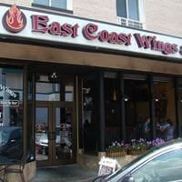
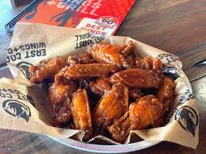
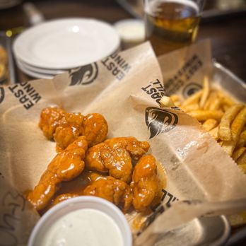
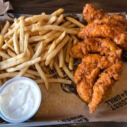

East Coast Wings + Grill
 A favorite hangout for UNCG students who love bold flavors and casual vibes.
This spot is known for its variety of wing sauces, combo meals, and relaxed
environment. Students can even enjoy a 10% discount, which makes it perfect
for budget-friendly cravings after class.
Hours: Mon–Thu: 11:00 AM – 10:00 PM
Honey BBQ Wings
Sweet, smoky, and dangerously addictive. A crowd favorite for a reason.
Classic Buffalo Wings
Spicy, saucy, and full of attitude; the kind of wings that wake up your taste buds.
Chicken Tender Basket
Crispy comfort food served hot with fries. Simple, classic, delicioso.